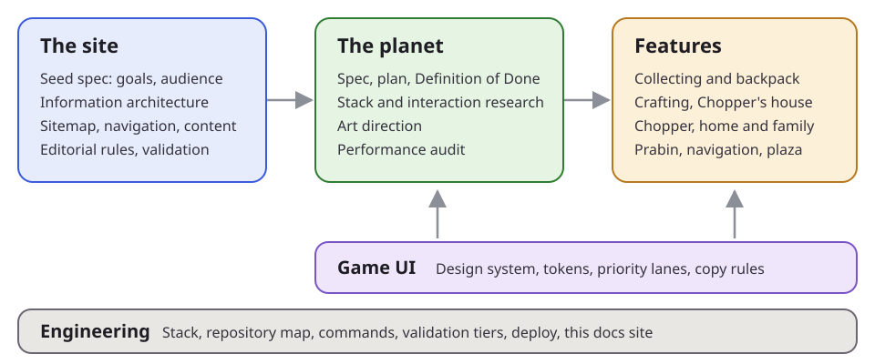

Seed spec
The goals, the audience and the ideas the portfolio started from.
Documentation
Every spec, plan, research report and Definition of Done behind Prabin Pebam's portfolio site and its little-planet game. This is the source of truth for people and for AI agents.

| Layer | Documents |
|---|---|
| The site | Seed spec; information architecture (goals, sitemap, taxonomy, navigation, templates, content inventory, editorial rules, validation) |
| The planet | Spec, plan, Definition of Done; stack and interaction research; art direction; performance audit |
| Features | Collecting and the backpack; crafting and Chopper's house; Chopper; home and family; Prabin, navigation and the plaza |
| Game UI | Design system, spec, touch controls, tokens, Definition of Done |
| Site UI | The website's own design system, visual language, spec, tokens, Definition of Done (separate from the game's) |
| Engineering | Stack, repository map, commands, validation tiers, deploy, this docs site |
The goals, the audience and the ideas the portfolio started from.
Journeys, sitemap, content model, navigation, templates and governance.
The landing, the classic site and the design library are set like a clean printed magazine, with their own design system in four tiers (tokens, fundamentals, compounds, layouts). It's separate from the game's. The live catalogue is on the site at /design/.
The tiers, the token rules, how to write a component and its story, and the checks.
Paper, ink, an indigo spot and a marigold highlighter; Fraunces, Newsreader and Figtree; pictures given room.
The research, the first draft, its critique, and the system as built, with its Definition of Done.
Content items, and a navigation structure per channel (the site, the planet), as data: one contract, mock JSON today and a backend API later.
The items, the site and planet structures, blocks and rules, and the /v1 contract the mock files mirror.
From hardcoded pages to data in four phases, with the decisions still open before the IA ships.
A local CMS in the dev server: edit articles on the page, manage media and sections, and publish with a git push.
Sections that list their pages, a navigation set in edit mode, and the planet's buildings mapping the same pages, read over the game.
Locked sections and private pages, sealed at build time and opened in the browser by a code or a magic link per recipient, and visits measured with PostHog.
The little-planet navigation: movement, the world, rendering, accessibility.
The build order and milestones.
What "finished" means for the planet, item by item.
The stack choice and the interaction design, with sources.
The target look: game screenshots repainted as concept art.
How load time and frame rate are measured, and the baseline.
Chopping, mining and picking; drops, the magnet, slots and the chest.
Recipes, paint, the build goal and its ghost outline.
The companion dog: his mind, his body, his fur and his card.
The house by the pond, the yard, and the family's routines.
Prabin as an NPC, route planning, seats, doors and the plaza layout.
Hard and soft things, plants that part, and how the family and Chopper get out of your way.
Principles, tokens, components, screen regions, priority, copy and accessibility.
The research, the audit, the first draft, its critique, and what was built.
Playing on a phone: the floating stick, the gestures and the HUD under a thumb.
The stack, the repository map, commands, validation and deploy.
Why site work broke the planet in development, and a proposal for two apps joined only by content, links and one build.
The repository, with AGENTS.md, the README and the asset credits.
This site is the source of truth
Read the spec for the area you're changing before you change it, and update it in the same change. The working rules (pinned versions, conventions, validation tiers) are in AGENTS.md at the repository root.
Find the spec
Use the navigation or search: every feature has a spec and, for larger work, a Definition of Done.
Follow the design system
Any UI change uses the tokens, the components and the priority lanes in the design system.
Keep it true
When the build differs from the spec, update the spec's "as built" section and its Definition of Done evidence.